人像编辑
精选 14 个相关案例
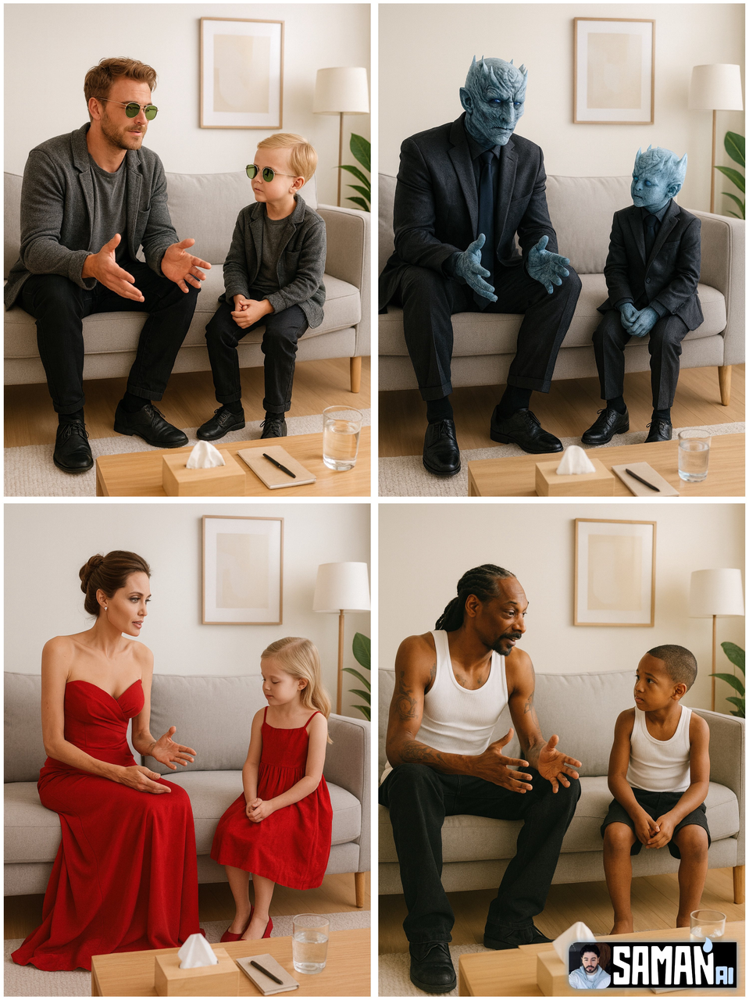
案例518: 对童年的自己治疗
对童年的自己治疗 - Nano Banana AI图片生成案例 📥 输入：需上传一张人物参考图像
🎨 查看AI提示词
🇨🇳 中文提示词
超逼真极简主义治疗室场景： 墙面浅色，灰色沙发，木质咖啡桌，上面放置纸巾盒、笔记本和一杯水；简约的装饰画和落地灯。 柔和自然光照射室内。 同一人以两种年龄状态并排而坐：左侧为成年人，双手打开交谈；右侧为儿童，微微低头倾听。 两人穿相同 [服装]（颜色与款式一致）。 风格干净，具有工作室氛围，构图居中，浅景深，50mm 镜头效果。 分辨率 4K，纵向 3:4。 场景中无其他人物，无文字，无水印。 >...
🇬🇧 English Prompt
Ultra-realistic minimalist therapy room scene: Light-colored walls, gray sofa, wooden coffee table with tissue box, notebook, and a glass of water on top; simple artwork and a floor lamp. Soft nat...
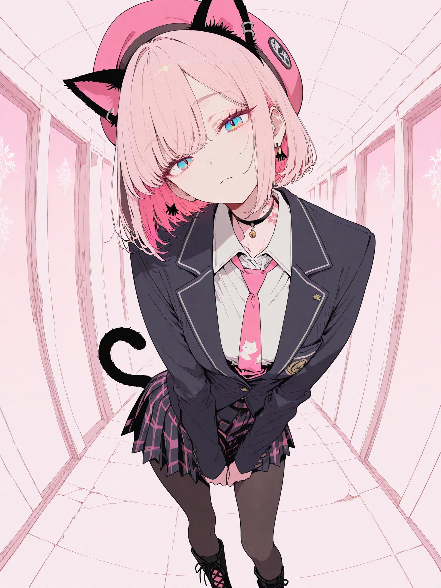
案例500: 成为Vtuber
成为Vtuber - Nano Banana AI图片生成案例 📥 输入：需上传一张参考图像
🎨 查看AI提示词
🇨🇳 中文提示词
使用原图创建一个虚拟的Vtuber及其直播画面。 Vtuber的发型和服装将忠实还原原图。 Vtuber的画面为2.5D画质，无需完美还原原图风格，但需要适度的立体感。 Vtuber的表情和姿势可以与原图有所差异。请让Vtuber手持游戏手柄。 仅将Vtuber的上半身放置在屏幕右下方。将正在游玩的游戏直播画面放置在屏幕中央。将聊天画面放置在屏幕左侧。 游戏画面的屏幕比例设置为较大，Vtuber的...
🇬🇧 English Prompt
Create a virtual Vtuber and its live streaming scene based on the original image. The Vtuber's hairstyle and outfit should be faithfully recreated from the original image. The Vtuber's appearance ...
案例489: 对童年的自己治疗
对童年的自己治疗 - Nano Banana AI图片生成案例 📥 输入：需上传一张人物参考图像
🎨 查看AI提示词
🇨🇳 中文提示词
超逼真极简主义治疗室场景： 墙面浅色，灰色沙发，木质咖啡桌，上面放置纸巾盒、笔记本和一杯水；简约的装饰画和落地灯。 柔和自然光照射室内。 同一人以两种年龄状态并排而坐：左侧为成年人，双手打开交谈；右侧为儿童，微微低头倾听。 两人穿相同 [服装]（颜色与款式一致）。 风格干净，具有工作室氛围，构图居中，浅景深，50mm 镜头效果。 分辨率 4K，纵向 3:4。 场景中无其他人物，无文字，无水印。 >...
🇬🇧 English Prompt
Ultra-realistic minimalist therapy room scene: Light-colored walls, gray sofa, wooden coffee table with a tissue box, notebook, and a glass of water on top; simple decorative painting and a floor la...
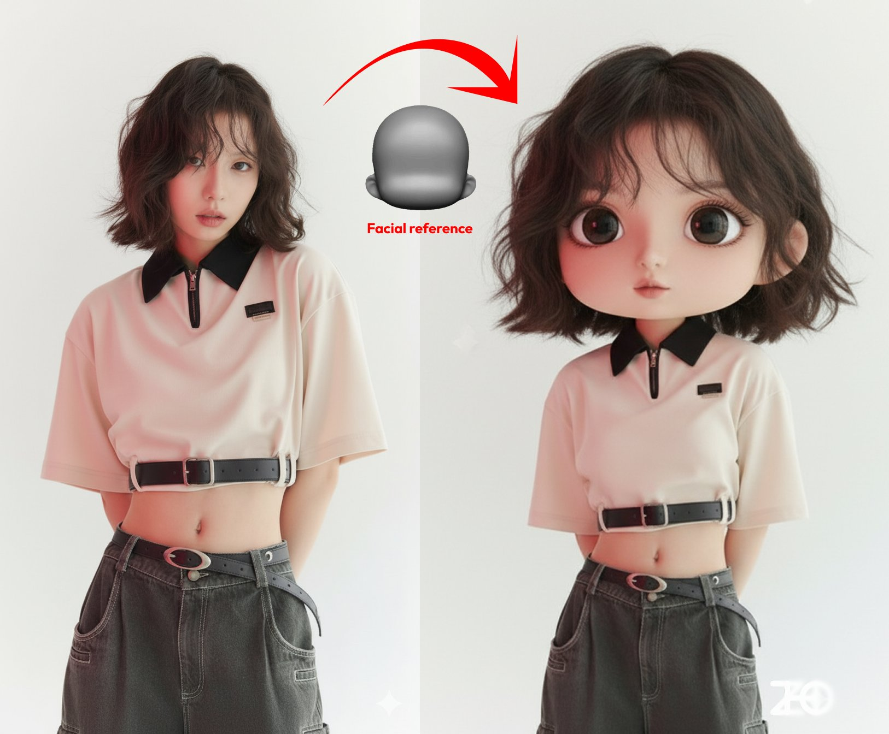
案例449: 控制人物脸型
控制人物脸型 - Nano Banana AI图片生成案例 📥 输入：需上传一张参考图像和一张脸型参考图片
🎨 查看AI提示词
🇨🇳 中文提示词
图一人物按照图二的脸型设计为q版形象
🇬🇧 English Prompt
Create a chibi-style character based on the face shape from Image Two.
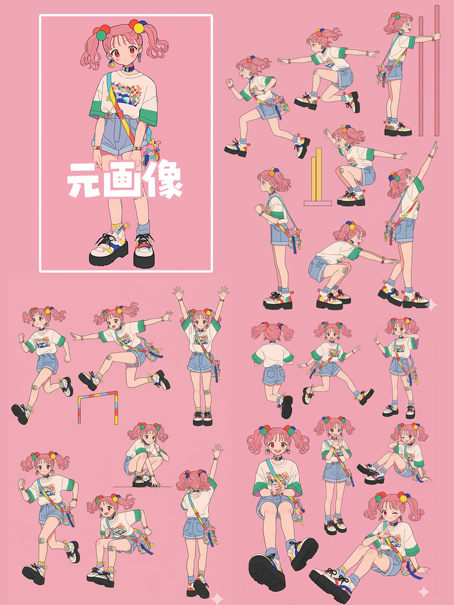
案例446: 超多人物姿势生成
超多人物姿势生成 - Nano Banana AI图片生成案例 📥 输入：需上传一张人物参考图像
🎨 查看AI提示词
🇨🇳 中文提示词
请为这幅插图创建一个姿势表，摆出各种姿势
🇬🇧 English Prompt
Create a pose sheet for this illustration, showcasing a variety of different poses.
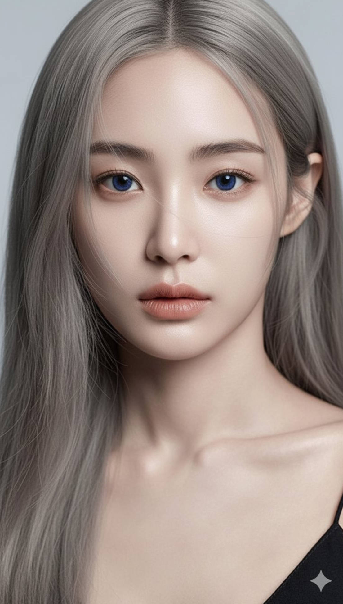
案例443: 妆面分析
妆面分析 - Nano Banana AI图片生成案例 📥 输入：需上传一张人物参考图像
🎨 查看AI提示词
🇨🇳 中文提示词
分析这张图片。用红笔标出可以改进的地方 Analyze this image. Use red pen to denote where you can improve
🇬🇧 English Prompt
Analyze this image. Mark areas for improvement with a red pen.
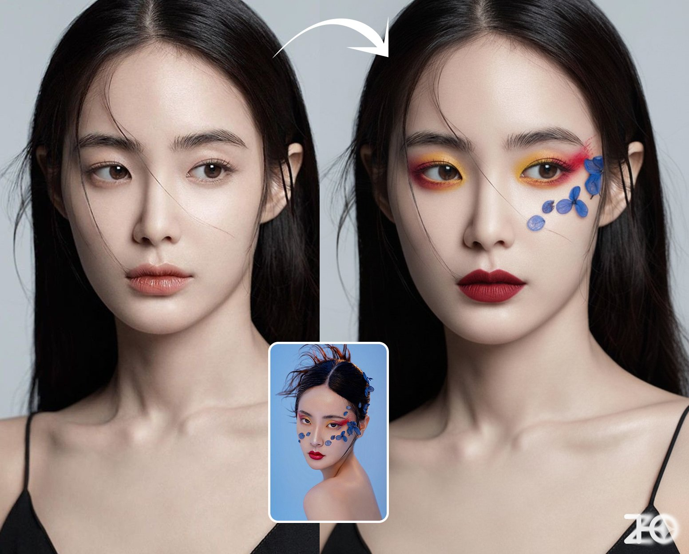
案例442: 虚拟试妆
虚拟试妆 - Nano Banana AI图片生成案例 📥 输入：需上传一张人物参考图像和一张妆造参考图片
🎨 查看AI提示词
🇨🇳 中文提示词
为图一人物化上图二的妆，还保持图一的姿势
🇬🇧 English Prompt
Transform the character in Image 1 to have the makeup from Image 2, while maintaining the pose from Image 1.
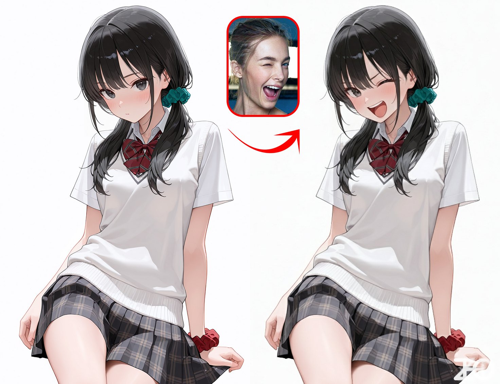
案例440: 参考图控制人物表情
参考图控制人物表情 - Nano Banana AI图片生成案例 📥 输入：需上传一张人物参考图和一张表情参考图
🎨 查看AI提示词
🇨🇳 中文提示词
图一人物参考/换成图二人物的表情
🇬🇧 English Prompt
Figure 1: reference character / replace with the expression of figure 2
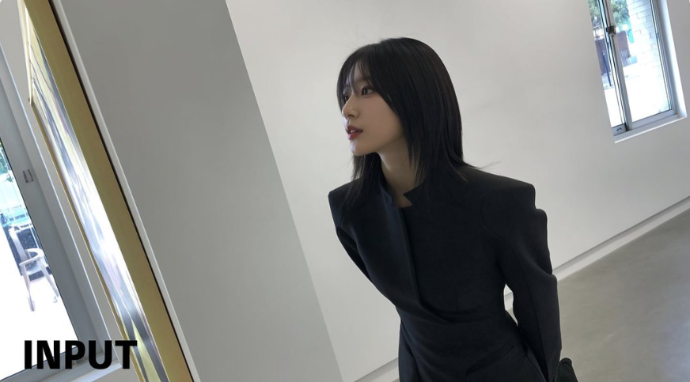
案例431: 人物姿势修改
人物姿势修改 - Nano Banana AI图片生成案例 📥 输入：需上传参考图像
🎨 查看AI提示词
🇨🇳 中文提示词
让图片中的人直视前方
🇬🇧 English Prompt
Make the person in the image look straight ahead.
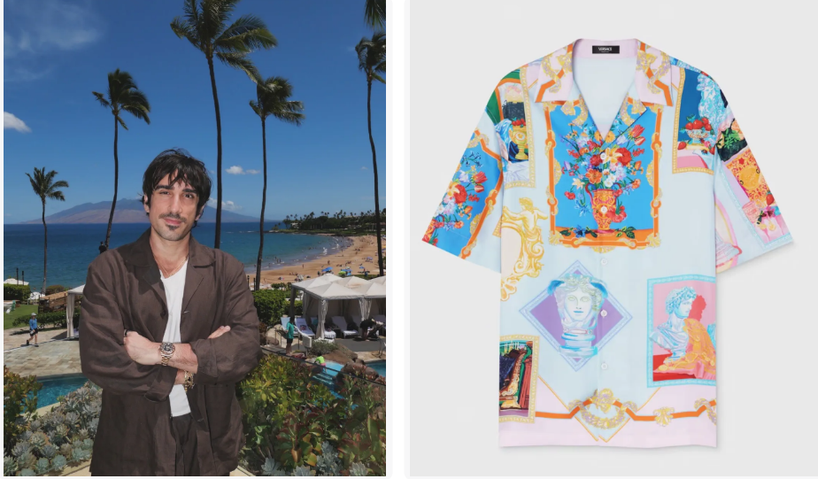
案例429: 人物换衣
人物换衣 - Nano Banana AI图片生成案例 📥 输入：需上传人物图像和衣服图像
🎨 查看AI提示词
🇨🇳 中文提示词
将输入图像中人物的服装替换为参考图像中显示的目标服装。保持人物的姿势、面部表情、背景和整体真实感不变。让新服装看起来自然、合身，并与光线和阴影保持一致。不要改变人物的身份或环境——只改变衣服
🇬🇧 English Prompt
Replace the clothing of the person in the input image with the target outfit shown in the reference image. Keep the person's pose, facial expression, background, and overall realism unchanged. Ensure ...
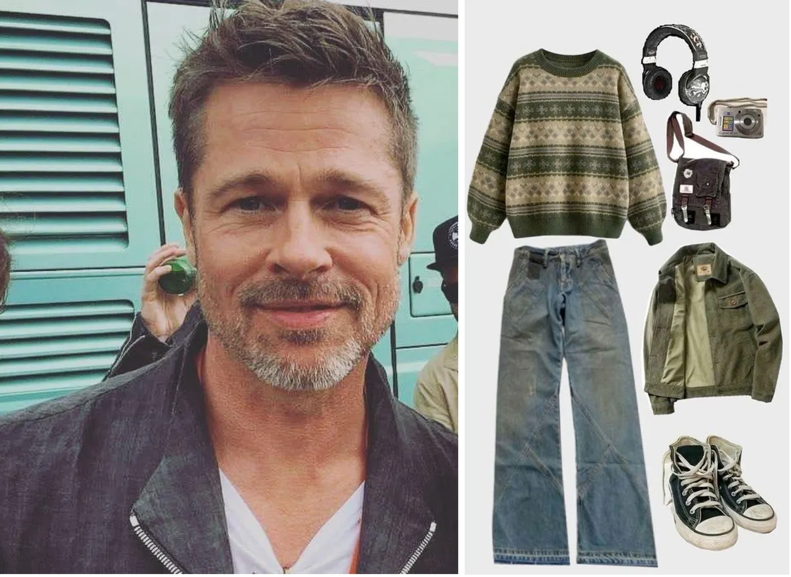
案例428: OOTD穿搭
OOTD穿搭 - Nano Banana AI图片生成案例 📥 输入：需上传一张人物图片和服装图片
🎨 查看AI提示词
🇨🇳 中文提示词
选择图1中的人，让他们穿上图2中的所有服装和配饰。在户外拍摄一系列写实的OOTD风格照片，使用自然光线，时尚的街头风格，清晰的全身镜头。保持图1中人物的身份和姿势，但以连贯时尚的方式展示图2中的完整服装和配饰
🇬🇧 English Prompt
Select the person from Image 1 and have them wear all the outfits and accessories from Image 2. Shoot a series of realistic OOTD-style photos outdoors, using natural lighting, with a fashionable stree...
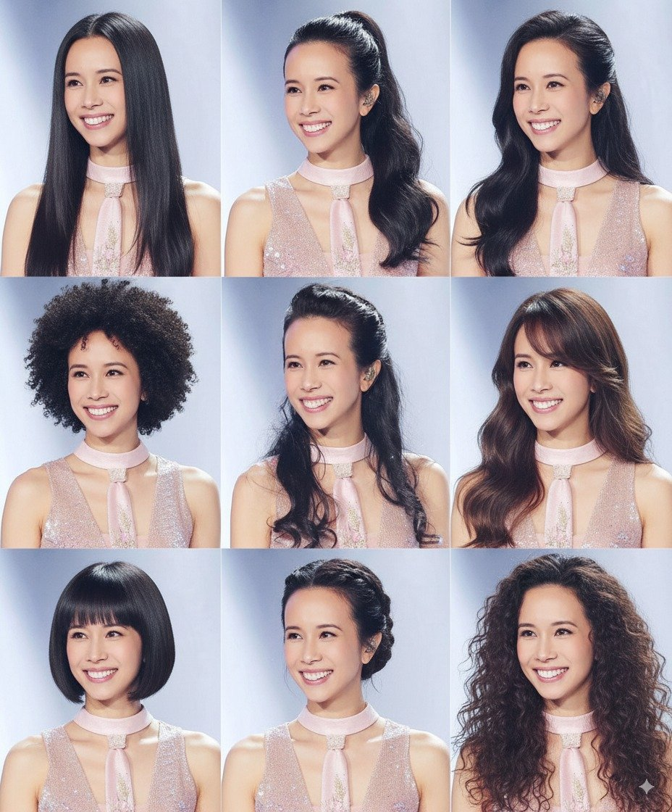
案例422: 更换多种发型
更换多种发型 - Nano Banana AI图片生成案例 📥 输入：需上传一张需要更换发型的人像图片
🎨 查看AI提示词
🇨🇳 中文提示词
以九宫格的方式生成这个人不同发型的头像
🇬🇧 English Prompt
Generate portraits of this person with different hairstyles arranged in a 3x3 grid.
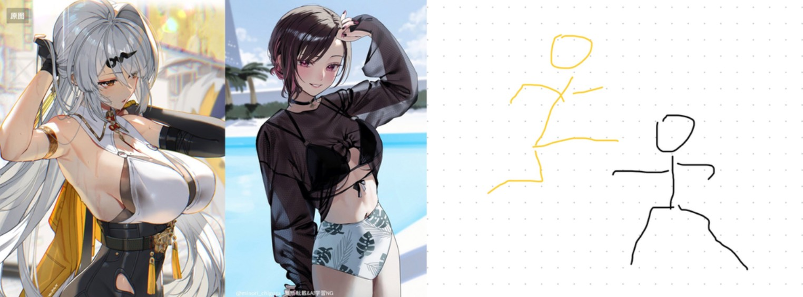
案例415: 手绘图控制多角色姿态
手绘图控制多角色姿态 - Nano Banana AI图片生成案例 📥 输入：需上传角色的图像以及手绘草图
🎨 查看AI提示词
🇨🇳 中文提示词
让这两个角色使用图3的姿势进行战斗。添加适当的视觉背景和场景互动，生成图像比例为16:9
🇬🇧 English Prompt
Have these two characters fight in the pose shown in Image 3. Add appropriate visual backgrounds and scene interactions, generating an image with a 16:9 aspect ratio.
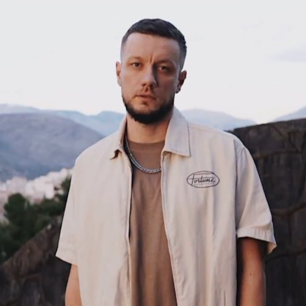
案例412: 不同时代自己的照片
不同时代自己的照片 - Nano Banana AI图片生成案例 📥 输入：需上传一张人物的照片
🎨 查看AI提示词
🇨🇳 中文提示词
将角色的风格改为[1970]年代的经典[男性]风格 添加[长卷发]， [长胡子]， 将背景改为标志性的[加州夏季风景] 不要改变角色的面部 > [!NOTE] > **将 [方括号] 中的文字改为你的时代和细节信息**
🇬🇧 English Prompt
Change the character's style to a classic [1970s] [male] look Add [long curly hair], [long beard], Change the background to an iconic [California summer landscape] Do not alter the character's...